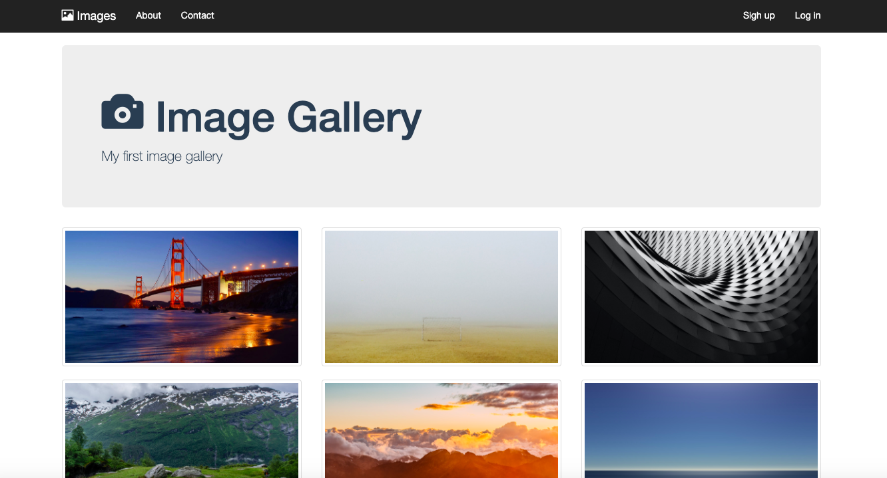

-

-
The following resources are for beginners learning HTML, CSS and Javascript. There are many other development launguages out there.
-
I began learning to code with The Web Developer Bootcamp on Udemy. Udemy has thousands of courses at very reasonable prices (most courses are less than £20).The course is designed for beginners and you can go at your own pace.
This is typically how everyones first HTML looks - random sentence and all.
-
An essential resource is W3 Schools. They have break downs of HTML CSS and Javascript. Once you've got to grips with HTML, you move on to CSS which lets you add style to code. Without CSS, all websites would look like the above.
It starts off very basic and there are simple code alongs to get you used to it.
-
Then you start building things that look like real websites. We started using Flexbox which is the latest way to style and layout elements.
For me, Flexbox was where things became more complex. Whilst HTML is very similar to spoken English, Flexbox is computer language. I found this resource - CSS Tricks- so useful for both Flexbox and CSS.
-
Images are styled with CSS whether they are backgrounds, photo grids or products. A great free image resource is Unsplash. Photographers upload amazing free stock photos you can use on your websites. I have also used images from Shuttershock and Canva on this site.
- 
-
I came across a big obstable when I started learning Javascript. Computer files are essential for writing code but I did not know how to create files with Caret or the Chromebook. I felt a bit stuck and lost motivation and so - in the interest of full transparency - put my learning on hold.
-
I decided to invest in a Macbook Air and a coding course to get the support I needed. There are LOADS of options out there that suit all timelines and budgets. Courses are run by Makers Academy, General Assembly, Founders and Coders and Code First Girls, to name a few. I chose 23 Code Street as I liked their mission to level the gender playing field in tech, and the fact that it was only two evenings a week.
-
We did small HTML and CSS projects initially. I appreciated the support and ability to discuss code. We had a slack chanel for support outside of lesson time. A great resource I got here was Flexbox Froggy - a game which actually makes learning Flexbox fun. There are a lot of games out there to help learn to code which I found useful.
-
We were taught by software engineers and did daily projects using what we had learned.
It was definitely necesseray to practice outside of the lesson time to keep up. The course I did with Udemy was really useful and another fantastic source is Youtube. There are thousands of tutorials and ideas on there.
-
We then moved onto Javascript (at last). Javascript adds funtionality to websites from changing thumbnail images on products to updating shopping baskets. We started using the HTML Canvas and created functions to create random patterns through to a basic version of Flappy Bird.
-
Finally we built our group project, Museum Meltdown, in HTML, CSS and Javascript. Here I learnt about Github, a hosting website for code that lets you share code across different computers. There is a lot more to Github but ultimately, you can host small projects for free on here.
If you have any specific questions about 23 Code Street please get in touch.
-
I'd like to make a small point on tech. You don't need the most modern or expensive laptop but you do definintely need one with a Mac, Windows or Linux operating system.
-
Organisation is key on projects. 23 Code Street introduced me to Trello. It is a free resource that keeps track of everything, from the big picture to the minute details. You can share lists across teams, or just use it yourself to write down the millions of ideas that come to mind (that will happen).
A "To do" "Doing" and "Done" format works well and I'd definitely include a list of your resources. 
-
Finally - getting a job. Startups are GREAT to look at. There are often more jobs than people so everyones does a bit of everything. A great place to look is Angel list.
When looking for a job it is vital to capitalise on whatever your skills are currently. Teachers have got jobs in teaching tech, pharmacists in med tech. It is really useful to have a practical understanding of how the software you buid will be used and this is not something you can teach.
-
I was lucky enough to find my role through the Tech She Can charter.
This is a group of 50 companies (and counting) who have recognised the importance of diversity in tech. They have also recognised that girls are often not encouraged to study tech further in school. The charter is commited to growing female talent and is definitely one to check out.